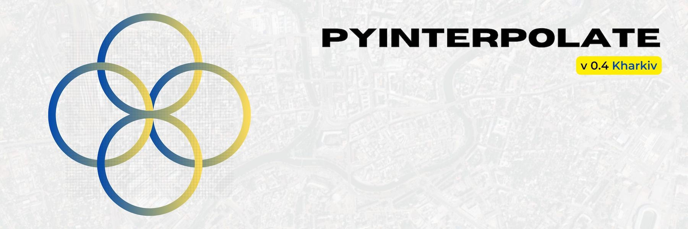

Pyinterpolate#
version 0.4.2 - Kharkiv#
{kind=link}
Note
The last documentation update: 2023-04-02
Pyinterpolate is the Python library for geostatistics. The package provides access to spatial statistics tools used in various studies. This package helps you interpolate spatial data with the Kriging technique.
If you’re:
GIS expert,
geologist,
mining engineer,
ecologist,
public health specialist,
data scientist.
Then this package may be useful for you. You could use it for:
spatial interpolation and spatial prediction,
alone or with machine learning libraries,
for point observations and aggregated data.
Pyinterpolate allows you to perform:
Ordinary Kriging and Simple Kriging (spatial interpolation from points),
Centroid-based Poisson Kriging of polygons (spatial interpolation from blocks and areas),
Area-to-area and Area-to-point Poisson Kriging of Polygons (spatial interpolation and data deconvolution from areas to points).
Inverse Distance Weighting.
Semivariogram regularization and deconvolution.
Semivariogram modeling and analysis.
With pyinterpolate we can retrieve the point support model from blocks. The example is COVID-19 population at risk mapping. Countries worldwide aggregate disease data to protect the privacy of infected people. But this kind of representation introduces bias to the decision-making process. To overcome this bias, you may use Poisson Kriging. Block aggregates of COVID-19 infection rate are transformed into the point support created from population density blocks. We get the population at risk map:

Contents#
How to cite#
Moliński, S., (2022). Pyinterpolate: Spatial interpolation in Python for point measurements and aggregated datasets. Journal of Open Source Software, 7(70), 2869, https://doi.org/10.21105/joss.02869